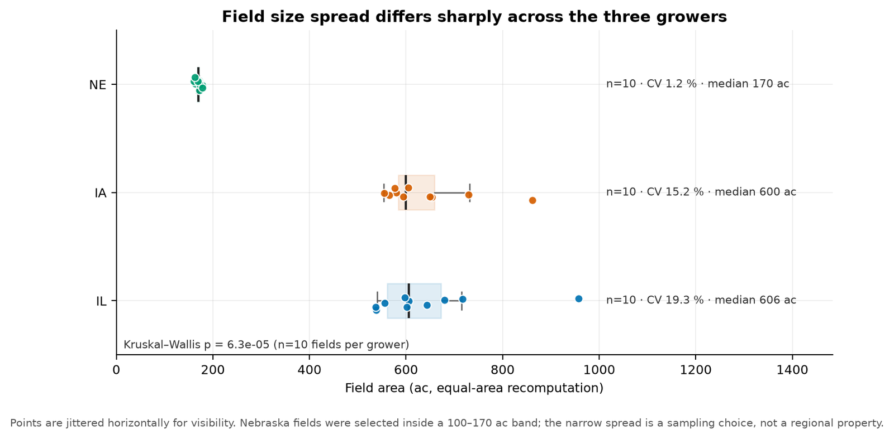
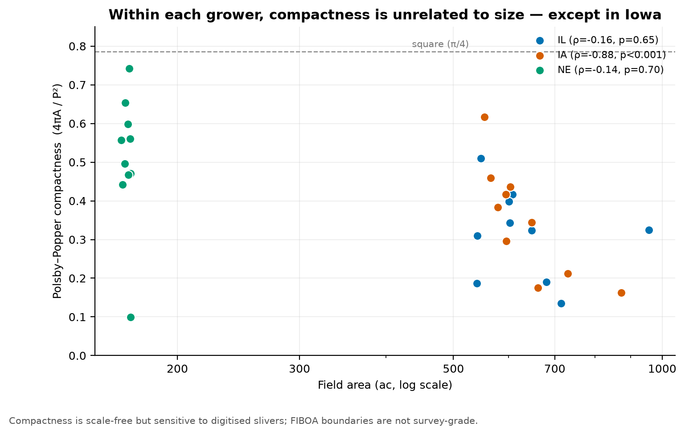
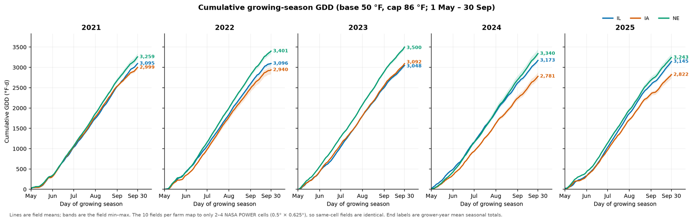
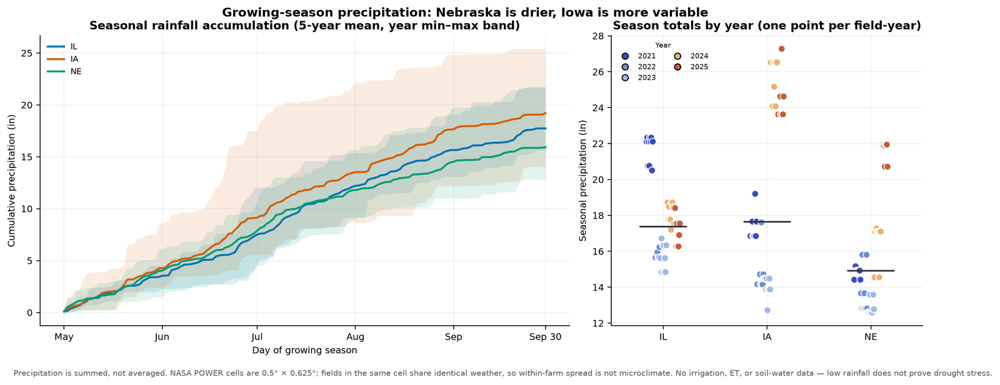
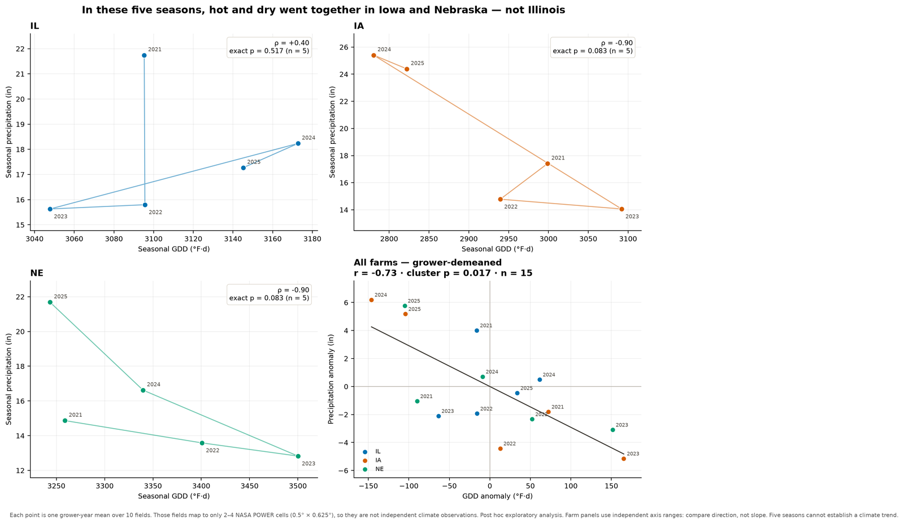
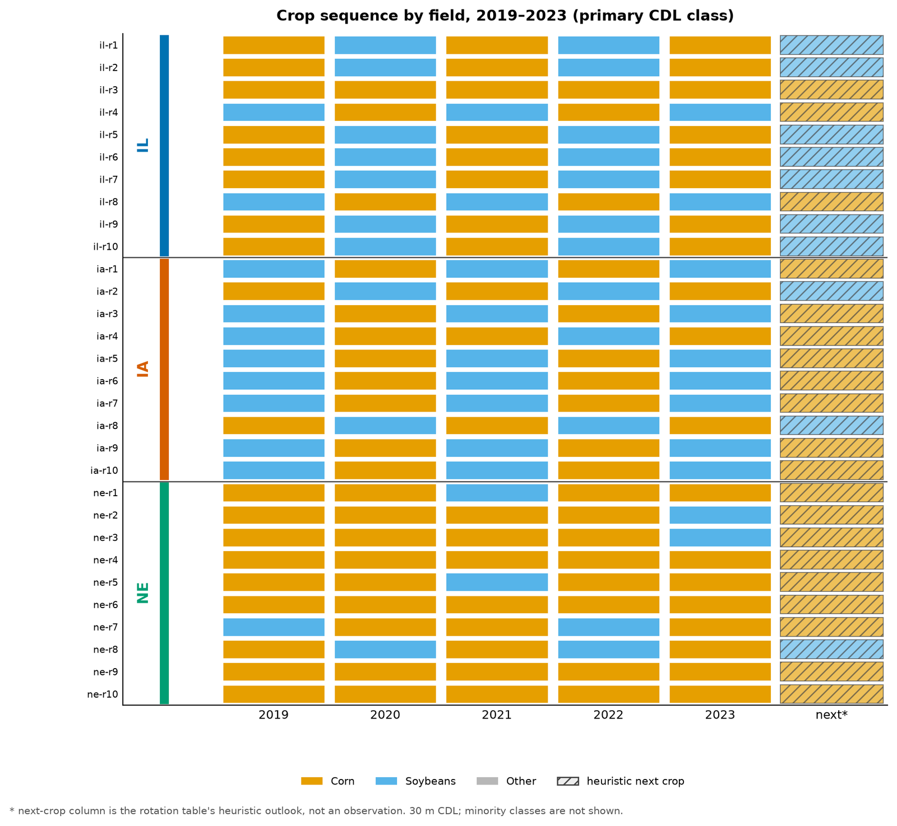
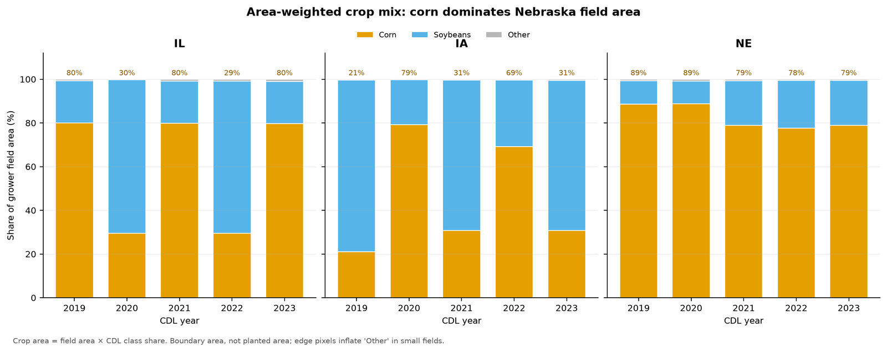
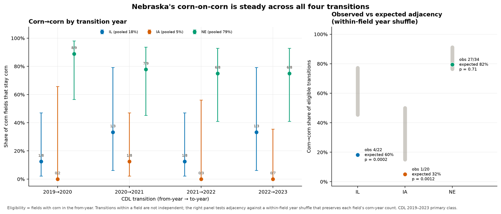
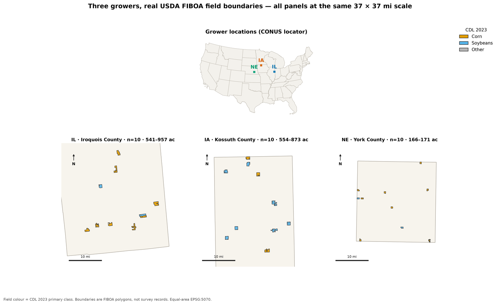

Scope, grain, and the three facts that govern every caveat
The sample is deliberately small and deliberately real: ten field boundaries per grower, one farm per state, and two five-year records that only partially overlap. Weather covers 2021–2025 (five growing seasons); crop history covers 2019–2023 (five CDL years). Their shared window is 2021–2023 (three years), and that is the only period where the weather and rotation analyses can be joined. The analysis is exploratory. It is built to show what a reproducible field-level workflow can support before anyone reaches for a management recommendation.
| Grower | County, state | Fields | Total ac | Mean field ac | Share of sample area |
|---|---|---|---|---|---|
| IL | Iroquois, Illinois | 10 | 6,444.27 | 644.4 | 44.3% |
| IA | Kossuth, Iowa | 10 | 6,409.23 | 640.9 | 44.1% |
| NE | York, Nebraska | 10 | 1,692.82 | 169.3 | 11.6% |
| Total | — | 30 | 14,546.32 | 484.9 | 100% |
Source: boundary_fields.csv
The grain problem
Each field is sampled at its own centroid, but NASA POWER snaps those points to 0.5° × 0.625° cells. The ten fields per farm land in just four cells in Illinois, and three each in Iowa and Nebraska, and fields that share a cell get identical values. That is two to four weather series per farm, not ten. Treating 150 field-years as 150 independent climate observations would inflate every weather test, so weather is aggregated to grower-year (n = 15), and the season-level comparison uses n = 5.
The sample problem
Three locations cannot separate a regional gradient from a management effect. The Nebraska fields were also drawn from a deliberately narrow size band, so their uniformity is a sampling choice, not a fact about York County. Tests are reported with that limitation attached.
What was measured
- Boundaries: 30 polygons, recomputed area, perimeter, Polsby–Popper compactness, bbox fill, nearest-neighbour distance, overlap checks.
- Weather (2021–2025): daily NASA POWER values, reduced to a May 1 – Sep 30 season for each of the five years. Each field centroid snaps to a 0.5° × 0.625° cell; the ten fields per farm resolve to four cells in IL and three each in IA and NE. GDD uses base 50 °F and an 86 °F cap; precipitation is a sum, not a mean.
- Units: U.S. customary presentation — acres, °F, °F·days, inches, miles, and mph. The reusable runner writes these with
--units us; calculations and tests use the metric source values, and the conversions are linear rescalings that leave Spearman ρ, Pearson r, p-values, and Cliff's δ unchanged. No yield data exist in this dataset, so no bu/ac figures are reported. - Crop history (2019–2023): USDA CDL primary class at 30 m, with per-field purity so edge pixels are visible rather than hidden.
- Overlap (2021–2023): the three years when weather and CDL both exist. The rotation section therefore describes four CDL transitions, not five; any joint weather–rotation comparison is limited to this shared window.
Field boundaries: two large-parcel farms and one uniform small-parcel sample
The first comparison is the least ambiguous: no statistically detectable difference in field size was found between IL and IA in this sample (Holm p = 0.97), while NE sits far below both. Absence of a detectable difference at 10 fields per farm is not evidence that the two populations have equal field sizes. The NE gap is a real difference in this sample, but it is not evidence that York County farms are uniformly 170 ac — the NE draw was constrained to a narrow band.

Shape and size are not one story
Compactness falls as fields get larger in Iowa (ρ = −0.88, p = 0.0008), but not in Illinois (ρ = −0.16, p = 0.65) or Nebraska (ρ = −0.14, p = 0.70). The pooled correlation (ρ = −0.68, p = 3.4×10⁻⁵) is largely a between-grower composition effect: NE contributes small, compact fields and pulls the pooled line. This is a compact example of why a pooled scatter can mislead when groups have different levels.

Geometry hygiene
- Zero overlapping pairs. One IL pair touches along a shared edge; touching is not overlap and is allowed.
- Median nearest-neighbour distance: IL 4.15 mi, IA 4.56 mi, NE 5.90 mi. The farms are not contiguous blocks.
- Polsby–Popper is scale-free but sensitive to slivers and road cuts; treat it as a shape descriptor, not a quality score.
Source: boundary_spatial.csv · boundary_fields.csv
Growing seasons: heat is a place signal, rainfall is a year signal
Across 2021–2025, Nebraska accumulated the most heat and the least rain; Iowa was coolest and wettest; Illinois sat between them. The more useful result is in the variance decomposition: 75% of GDD variance is between growers but only 6% is between years, while 52% of precipitation variance is between years and only 12% between growers. Heat separates the farms; rain separates the seasons.
| Grower | GDD °F·d | Precip in | Frost-free d | Longest dry run d | Max 30-day precip in |
|---|---|---|---|---|---|
| IL | 3,111.3 | 17.7 | 192.5 | 11.7 | 6.5 |
| IA | 2,926.6 | 19.2 | 180.5 | 13.6 | 7.2 |
| NE | 3,348.6 | 15.9 | 195.8 | 14.0 | 5.8 |
Source: weather_grower_stats.csv


Do not read the field-level p-values as farm-level evidence
The Kruskal–Wallis tests on these tables use 10 fields per farm, but those fields resolve to only two to four NASA POWER cells (IL 4, IA 3, NE 3). The p-values describe how cleanly the farm samples separate, not how confidently three locations differ. The honest statement is descriptive: in these five seasons, NE was hotter than both other farms in every year and drier than IA in every year; its rainfall ranking against IL flips in 2025.
Pairwise Mann–Whitney tests with Holm correction separate the farms on nearly every weather metric: most contrasts sit at p = 3.7×10⁻⁴ or smaller with |Cliff's δ| = 1.0. The one weaker contrast is IA vs NE longest dry run (Holm p = 0.0056, δ = −0.70). The effects are large in this sample; the inference is still limited by three locations. The variance decomposition is the more defensible summary.
Source: weather_grower_tests.csv · weather_variance_components.csv
Do hotter seasons also arrive drier? A five-season, three-farm test
This analysis was added after the initial EDA, once the seasonal weather tables had been examined; it is post hoc and exploratory, not a pre-specified confirmatory test. The question is tempting to answer with a scatter of all 150 field-years, which would produce a tight cloud and a spuriously tiny p-value. That design is wrong: the 10 fields in a farm collapse to two to four distinct weather cells. The analysis below aggregates first, then compares seasons.
Post hoc, exploratory, and reported as such
The GDD–precipitation question, the season index, and the exact test were chosen after looking at the initial EDA. The statistics below are reported exactly as computed — no result is changed or hidden — but their p-values describe this data-chosen design on these five seasons. They are not confirmatory, and a confirmatory test would need an independent weather record and a design fixed before looking at it.
Design chosen
- Unit: grower-year mean over the 10 fields (15 rows).
- Index test: the regional season index — mean GDD and mean precipitation across the three farms within each year — with n = 5 seasons.
- Small-n correction: exact two-sided Spearman permutation over all 5! = 120 rank orders. At n = 5 the asymptotic p for ρ = −0.90 is 0.037, but the exact value is 0.083. The asymptotic approximation is anti-conservative here, so it is not used.
- Per-farm tests: the same exact Spearman test on each grower's five seasons, reported as a consistency check, not as three independent replications.
- Pooled descriptives: grower-demeaned anomalies with Pearson r and a within-grower year-shuffle permutation (10,000 draws, seed 20261120). This preserves each farm's mean but cannot remove the shared-season dependence, so its p is labelled optimistic.
- Fragility check: leave-one-season-out Spearman ρ for the index and each farm.

| Scope | Unit | n | Spearman ρ | p | Method | Slope |
|---|---|---|---|---|---|---|
| Season index | season | 5 | −1.00 | 0.0167 | exact permutation | −5.24 |
| IL | grower-year | 5 | +0.40 | 0.517 | exact permutation | +1.21 |
| IA | grower-year | 5 | −0.90 | 0.083 | exact permutation | −3.83 |
| NE | grower-year | 5 | −0.90 | 0.083 | exact permutation | −2.47 |
| Grower means | location | 3 | −1.00 | — | descriptive only | −0.78 |
| Pooled anomalies | grower-year | 15 | −0.71 | 0.017* | cluster permutation (Pearson r = −0.73) | −2.92 |
*Descriptive: shared seasons make this p optimistic. Full precision in weather_gdd_precip_corr.csv.
What the seasons show
The regional season index is perfectly inverse: the hottest season is the driest and the coolest is the wettest (ρ = −1.00, exact p = 0.0167). That is the smallest attainable two-sided exact p at n = 5 — a perfect rank reversal cannot produce a smaller one. It is a real feature of these five seasons and a fragile basis for a rule.
Iowa and Nebraska both show the same negative direction (ρ = −0.90 each, exact p = 0.083). Illinois does not (ρ = +0.40, p = 0.52), and its sign flips depending on which year is dropped. Leave-one-out keeps the index at −1.00 for every dropped season and keeps IA between −1.00 and −0.80 and NE between −1.00 and −0.80, but moves IL from −0.20 to +1.00. The IL result is the unstable one, not the negative signal.
What this supports
- A description of the 2021–2025 seasons: hot summers in IA and NE coincided with low seasonal rainfall.
- A reproducible, explicitly stated comparison at the season level, with an exact small-n p and a leave-one-out fragility check. The hypotheses were chosen post hoc, so the p-values are exploratory, not confirmatory.
- A demonstration that the field-level design would have overstated precision, and a corrected alternative.
- A hypothesis worth testing on a longer record: summer heat and rainfall may be coupled in these two states but not in Illinois.
What it does not support
- Not a causal claim. Heat does not "cause" low rainfall in this analysis; both are seasonal aggregates driven by circulation we did not measure.
- Not a climate trend. Five seasons cannot establish a normal, a shift, or a return period.
- Not a between-farm trade-off. The three grower means are perfectly rank-confounded with geography (n = 3) and are not tested.
- Not a yield or drought statement. No irrigation, ET, soil water, or crop outcome is in the model.
- Not independent replication. The pooled cluster p is descriptive because all three farms experience the same years.
Recommended visualization and comparison
The recommended display is exactly Figure W3: a 2×2 panel with one farm per panel (five labelled grower-years, path in year order, exact ρ and p) and a fourth panel of grower-demeaned anomalies for the pooled descriptive view. The recommended comparison is a two-tier test — the season index as the primary comparison within this design, per-farm exact tests as a consistency check, and the pooled cluster permutation explicitly demoted to description. Alternatives considered and rejected: a 150-point field-level scatter (pseudo-replication), a regression through three farm means (n = 3, rank-confounded), and a mixed model with farm random effects (not identifiable with three farms and five years).
Proposed subskill improvements
- Longer baseline. Add an option to compare the five seasons with 1991–2020 normals and to stream a longer NASA POWER/PRISM history, so the analysis can distinguish a wet/dry phase from a trend.
- Water balance, not rainfall. Add reference ET (FAO-56 or Hargreaves) and SSURGO available water capacity, then report a climatic water deficit. Precipitation alone conflates timing with supply.
- Grid realism. The pipeline already resolves each field to its NASA POWER cell; add a cell-area-weighted farm value and report the between-cell spread, so a farm spanning four cells is not summarised as one number.
- Effect-size uncertainty. Emit a block-bootstrap CI for the coupling slope (resampling seasons, not fields) so the figure can show an interval rather than a point.
- Power note. Print the minimum detectable |ρ| at the current n beside the test, so users see that n = 5 only detects a near-perfect rank reversal.
- Wording guardrails. Keep an auto-generated "association, not causation" line in the manifest methods block and in every coupling figure footer.
Crop history: corn–soy alternation in IL and IA, corn dominance in NE
The CDL sequence is the clearest behavioural difference in the dataset. Nine of ten IL fields and nine of ten IA fields follow a strict corn–soy alternation across 2019–2023. Nebraska is the opposite: four of ten fields are corn in all five years, and nine of ten contain at least one corn→corn transition.

| Grower | Fields with ≥1 corn→corn | Continuous corn (5/5) | Corn field-years | Pattern read |
|---|---|---|---|---|
| IL | 1 / 10 | 1 (il-r3) | 30 / 50 (60%) | Nine fields alternate; one continuous-corn field |
| IA | 1 / 10 | 0 | 23 / 50 (46%) | Nine fields alternate; ia-r4 has one corn→corn pair |
| NE | 9 / 10 | 4 | 42 / 50 (84%) | Corn-dominated; one field (ne-r8) strictly alternates |
Source: rotation flags · rotation patterns

CDL purity averages 97.7% and never falls below 94.9%, so the primary-class read is not being driven by mixed pixels; there is no meaningful area–purity relationship (pooled ρ = 0.32, p = 0.084). The field-level rotation flag is strongly associated with grower (χ² = 18.37, p = 1.0×10⁻⁴, Cramér's V = 0.78). Fisher exact tests on the field-level counts: NE vs IL and NE vs IA both Holm p = 0.0033; IL vs IA is p = 1.0 (identical counts, 1/10 each).
Corn after corn: Nebraska is steady, not concentrated in one transition
The second new analysis asks a narrower question than the field-level flag: in each of the four consecutive-year transitions, how many fields that were corn stayed corn? Restricting the denominator to fields that were corn in the from-year is what makes the rates comparable across years.

| Grower | Transition | Corn→corn | Eligible | Rate | 95% CI |
|---|---|---|---|---|---|
| IL | 2019→2020 | 1 | 8 | 12.5% | 2.2–47.1% |
| 2020→2021 | 1 | 3 | 33.3% | 6.1–79.2% | |
| 2021→2022 | 1 | 8 | 12.5% | 2.2–47.1% | |
| 2022→2023 | 1 | 3 | 33.3% | 6.1–79.2% | |
| IA | 2019→2020 | 0 | 2 | 0.0% | 0.0–65.8% |
| 2020→2021 | 1 | 8 | 12.5% | 2.2–47.1% | |
| 2021→2022 | 0 | 3 | 0.0% | 0.0–56.1% | |
| 2022→2023 | 0 | 7 | 0.0% | 0.0–35.4% | |
| NE | 2019→2020 | 8 | 9 | 88.9% | 56.5–98.0% |
| 2020→2021 | 7 | 9 | 77.8% | 45.3–93.7% | |
| 2021→2022 | 6 | 8 | 75.0% | 40.9–92.9% | |
| 2022→2023 | 6 | 8 | 75.0% | 40.9–92.9% |
The answer: consistent, not concentrated
Nebraska's four rates sit between 75.0% and 88.9% and contribute 22–30% of
the farm's 27 corn→corn events. There is no single transition carrying the
result — no "2021 was the bad year" story. The Wilson intervals all overlap,
so the correct reading is "no visible concentration", not "a constant rate
of exactly 79%". IL and IA are the concentrated cases: every IL event comes
from il-r3 (the only continuous-corn field) and the single IA
event comes from ia-r4.
The persistence test separates frequency from adjacency. If each field's number of corn years is fixed and the years are shuffled inside that field, NE's expected adjacency is 28.0 and the observed count is 27 — exactly what chance would produce (p = 0.71). IL and IA are the opposite: 4 observed vs 13.2 expected (p = 0.0002) and 1 vs 6.4 (p = 0.0012), i.e. more alternating than their corn frequency alone would predict. In other words, NE's corn-on-corn is a high corn frequency phenomenon, not evidence of longer runs than that frequency implies.
Implication for the five-year rotation history
The field-level finding — 9 of 10 NE fields with at least one corn→corn transition, versus 1 of 10 in IL and IA — is not an artifact of one transition year. It is stable across all four. But a five-year CDL window cannot tell a permanent continuous-corn system from a transient run, and it cannot say why. Irrigation, feed demand, seed economics, and risk preference are all plausible and all unmeasured. The right conclusion is a robust description of this five-year history plus a longer-record test, not a claim about NE farming as a whole.
Recommended visualization and comparison
The recommended display is Figure C3: a transition dot plot with Wilson intervals and n/N labels, paired with an observed-versus-null panel. The recommended comparison is the per-transition rate plus the within-field year-shuffle persistence test. A chi-square across the four transition-years is deliberately not used: NE's 34 transition rows come from 10 fields and are serially dependent, so that test would overstate the evidence. Pooling within grower and reporting the field-level Fisher result keeps the inferential unit at the field.
Proposed subskill improvements
- Longer CDL window. CDL is available well before 2019; a 10–15 year window would separate continuous corn from a five-year run and let the persistence null see more arrangements.
- Run-length metrics. Add maximum consecutive corn years and a run-length distribution, not just adjacent-pair counts.
- Field-level random effects. Replace the marginal shuffle with a conditional (field-stratified) test or a GEE, so the dependence is modelled rather than only permuted.
- Exact enumeration. At five years, each field has at most 32 year orders; enumerate exactly instead of Monte Carlo sampling, removing seed dependence.
- Management join. Add yield, irrigation, and input records where available. Corn-after-corn is an agronomic and economic question, not only a classification question.
- Transition heatmap option. Emit the grower × transition × rate matrix as a heatmap for multi-grower runs where the dot plot becomes crowded.
Geography: three counties, three different field systems

The map is a locator, not an analytical result. It confirms the three counties and makes the parcel geometry legible: IL and IA fields are large and irregular, NE fields are small and compact. The visual difference is the same one measured in Section 02, and it carries the same sampling caveat.
Interpretation and limits: observed, plausible, and unsupported
The report deliberately keeps three kinds of statement apart. An observed statement restates a number in a table. A plausible statement offers a mechanism that the data cannot test. An unsupported statement is the one a reader might want but the design cannot deliver. The table below is the short version.
| Observed in these data | Plausible explanation (untested) | What cannot be established |
|---|---|---|
| NE fields are small and uniform; IL/IA fields are larger and more variable. | Different parcel history, inheritance, and equipment scale; the NE draw used a deliberately narrow size band. | That York County parcels are uniformly small, or that size causes any management difference. |
| IA shows a strong area–compactness trade-off; IL and NE do not. | IA parcel consolidation along roads or drainage; local survey patterns. | That large fields are inherently irregular, or that the IA pattern generalises beyond these 10 fields. |
| Hot seasons and low rainfall coincide in IA and NE, not IL. | Large-scale circulation patterns that produce hot, dry summers in the western Corn Belt. | That heat causes drought, that the pattern is a climate trend, or that it will repeat. |
| NE has 9/10 fields with corn→corn and 84% corn field-years. | Irrigation, feed demand, continuous-corn economics, or risk preference. | Why the pattern exists, whether it is profitable, or whether it predates 2019. |
| NE corn→corn is steady across all four transitions and at chance adjacency. | A stable high-corn rotation rather than a single event. | That it is a permanent system; five CDL years cannot separate a stable rotation from a transient run. |
Hard limits
- Five weather seasons (2021–2025). The smallest attainable two-sided exact p at n = 5 is 0.0167, and a rank correlation of ±1.0 is required to reach it.
- Five CDL years (2019–2023). Four transitions per field. Serial dependence within a field means transition rows are not independent trials.
- Three sampled locations. Between-grower correlation is a three-point description, perfectly rank-confounded with geography.
- Two to four weather cells per farm. NASA POWER nodes are 0.5° × 0.625°; the ten fields per farm yield four distinct series in IL and three each in IA and NE. Within-farm spread is between those cells, not microclimate, and the cells are not independent climate observations.
- CDL is a 30 m annual primary class. Double crops, cover crops, and silage are not resolved; mean purity is 97.7% but edge pixels remain.
- No outcomes. No yield, irrigation, soil water, management, cost, or price data. No recommendation should be read out of this report.
The one-sentence version
In this 30-field, three-grower, five-season sample, field geometry and corn frequency separate the farms sharply; heat and rainfall move together in IA and NE but not IL; and none of that identifies a cause or a management action.
Analysis index: nine figures, 26 tables, one manifest
Everything displayed on this page is reproducible from the runner and the
runtime inputs. The five tables marked new and the
two new figures are the additions from this iteration. A later presentation
pass changed only units: all 26 tables and nine figures were regenerated
from the same metric calculations with --units us, and every
statistical column (ρ, r, p, test statistics, counts, shares) is unchanged.
The manifest records input hashes, parameters, row counts, grid-cell counts,
unit conversion factors, package versions, and the methods block.
Figures
fig_boundary_size_by_grower.pngB1 · field size distributions with bootstrap median CI.fig_boundary_shape_vs_size.pngB2 · area vs Polsby–Popper by grower and pooled.fig_weather_gdd_accumulation.pngW1 · cumulative GDD by year and grower.fig_weather_seasonal_precip.pngW2 · seasonal precipitation by year and grower.fig_weather_gdd_precip_coupling.pngW3 · heat–rain coupling at the grower-year grain. newfig_cdl_crop_sequence_grid.pngC1 · crop sequence by field, 2019–2023.fig_cdl_area_weighted_crop_mix.pngC2 · area-weighted corn–soy mix.fig_cdl_corn_after_corn_by_year.pngC3 · corn→corn by transition with persistence null. newfig_map_three_growers.pngM1 · locator and three projected field panels.
Boundary and map tables
boundary_fields.csvPer-field geometry, area, perimeter, Polsby–Popper, bbox fill, centroid.boundary_size_stats.csvPer-grower size summary, bootstrap median CI, CV, Gini.boundary_size_test.csvKruskal–Wallis and pairwise Mann–Whitney with Holm and Cliff's δ.boundary_shape_corr.csvSpearman area vs compactness by grower and pooled.boundary_spatial.csvNearest-neighbour distances, max pairwise distance, overlap/touching counts.map_field_index.csvPanel extents and per-field map placement.
Weather tables
weather_grower_stats.csvFive-season mean, SD, min, and max per grower and metric.weather_grower_tests.csvKruskal–Wallis and pairwise tests for each weather metric.weather_grower_year.csvGrower-year means, field SD, and anomalies. newweather_seasonal_metrics.csvField-year seasonal metrics, 150 rows.weather_variance_components.csvVariance shares for grower, field, year, and residual.weather_year_summary.csvGrower-year GDD, precipitation, frost, and dry-run means.weather_year_variability.csvYear-to-year SD and CV per grower and metric.weather_gdd_precip_corr.csvSeason-index, per-grower, location, and pooled coupling statistics. newweather_gdd_precip_sensitivity.csvLeave-one-season-out Spearman ρ. new
CDL and rotation tables
cdl_primary_crop.csvField-year primary class, purity, and class percentages.cdl_area_mix.csvArea-weighted crop shares by grower-year.cdl_transitions.csvLong table of consecutive-year transitions.cdl_transition_matrix.csvFrom-crop → to-crop counts and row probabilities.cdl_transition_test.csvField-level corn→corn proportions, Wilson CIs, Fisher tests.cdl_transition_chisq.csvGrower × corn→corn field flag, χ² and Cramér's V.cdl_field_rotation_flags.csvPer-field corn→corn count and flag.cdl_rotation_patterns.csvField sequences, diversity, predicted next crop, confidence.cdl_purity_diagnostics.csvArea vs primary-class purity by grower and pooled.cdl_corn_after_corn_by_transition.csvCorn→corn rate per transition with Wilson CIs. newcdl_corn_after_corn_persistence.csvObserved adjacency vs within-field year-shuffle null. new
Reproducibility
The runner is my-farm-advisor/data-pipeline/src/scripts/eda/eda_multifarm.py.
The manifest records the input paths and SHA-256 hashes, the season window,
GDD parameters, permutation count, seed, unit system and conversion
factors, package versions, and the analysis unit for each new test.
Re-running with the same seed reproduces the permutation tables exactly.
| Step | Command |
|---|---|
| Sync source | DATA_PIPELINE_DATA_ROOT=… ./scripts/install.sh --non-interactive --force-refresh --no-install-deps --persist none |
| Run EDA | eda_multifarm.py --farm il-grower/illinois-demo-farm:IL --farm ia-grower/iowa-demo-farm:IA --farm ne-grower/nebraska-demo-farm:NE --out …/eda/assignment-2 --units us --permutations 10000 |
| Validate | ./scripts/validate.sh from the repository root |